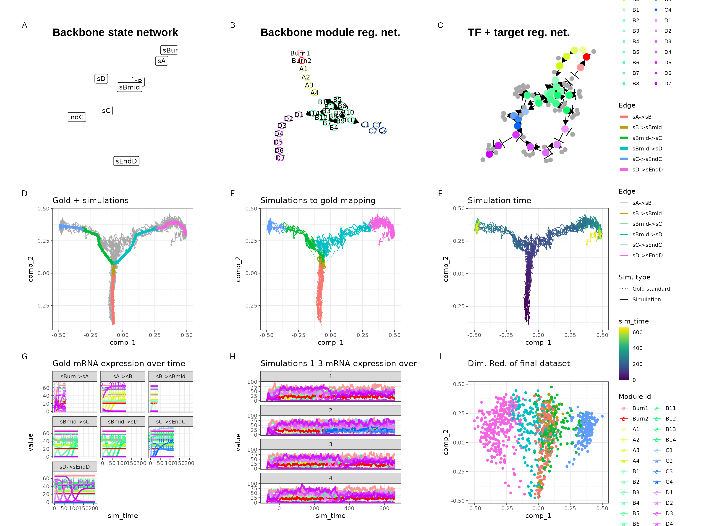
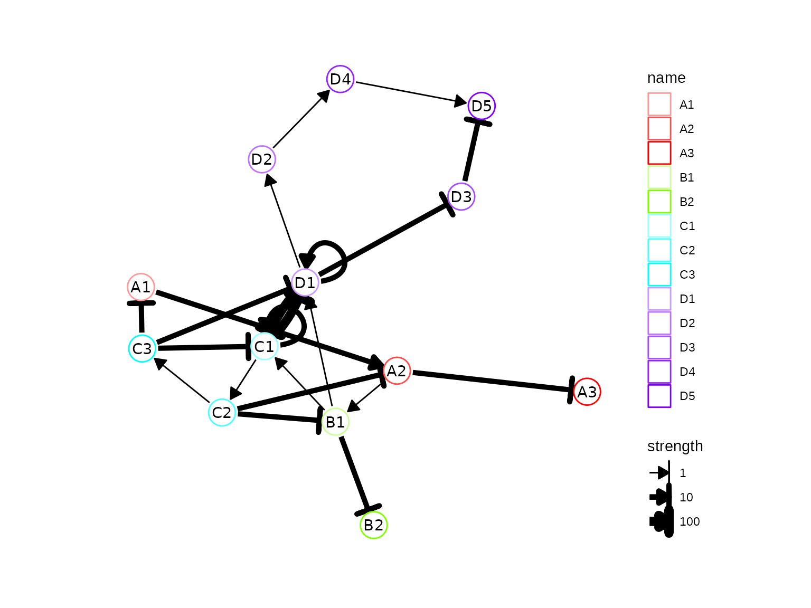
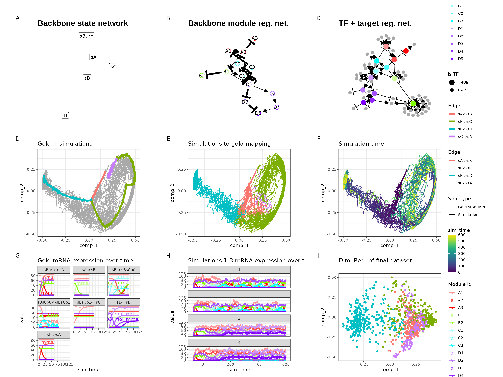
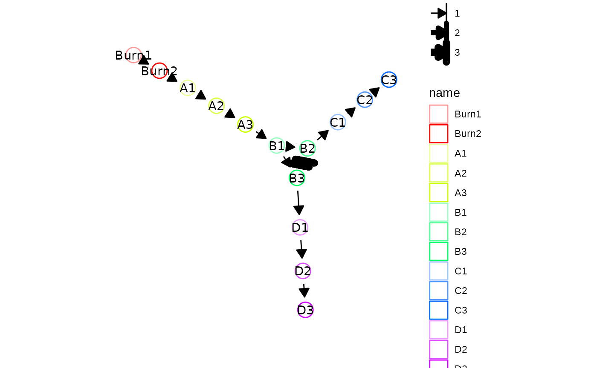
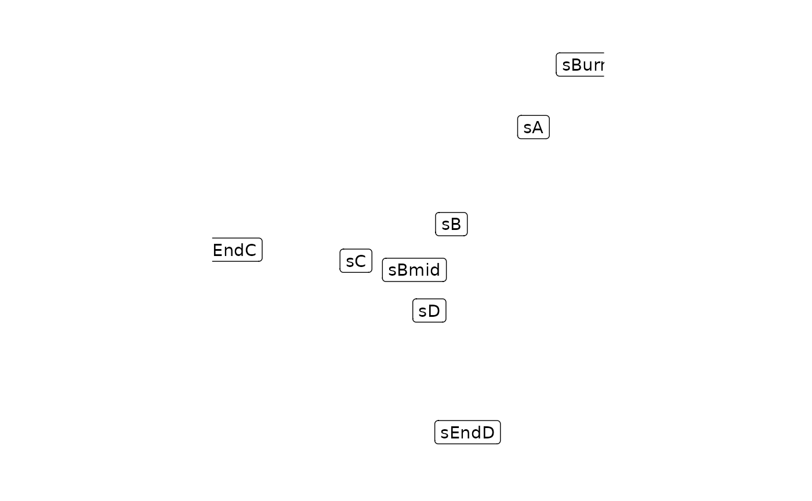
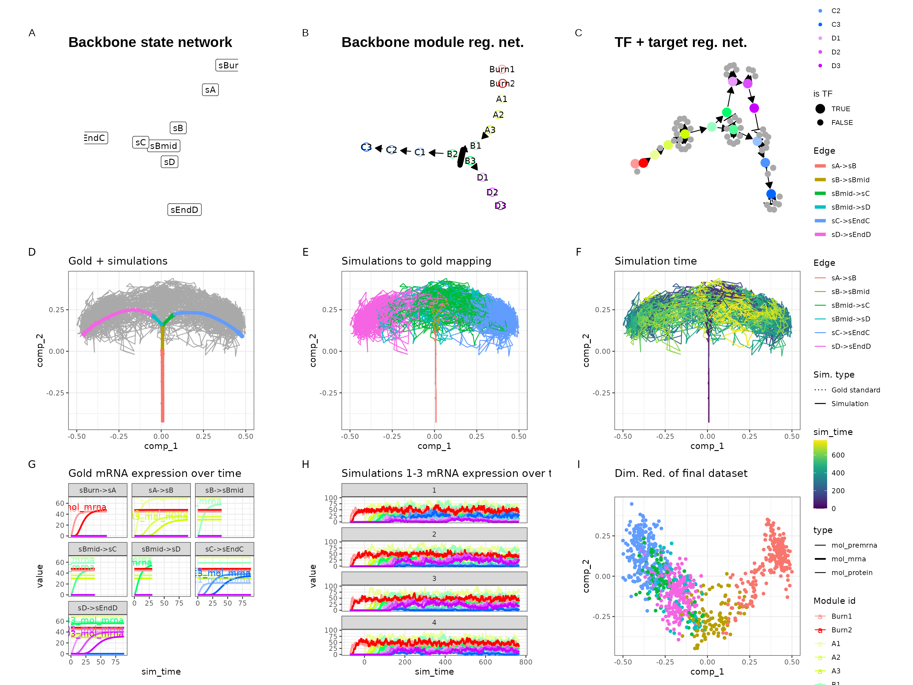
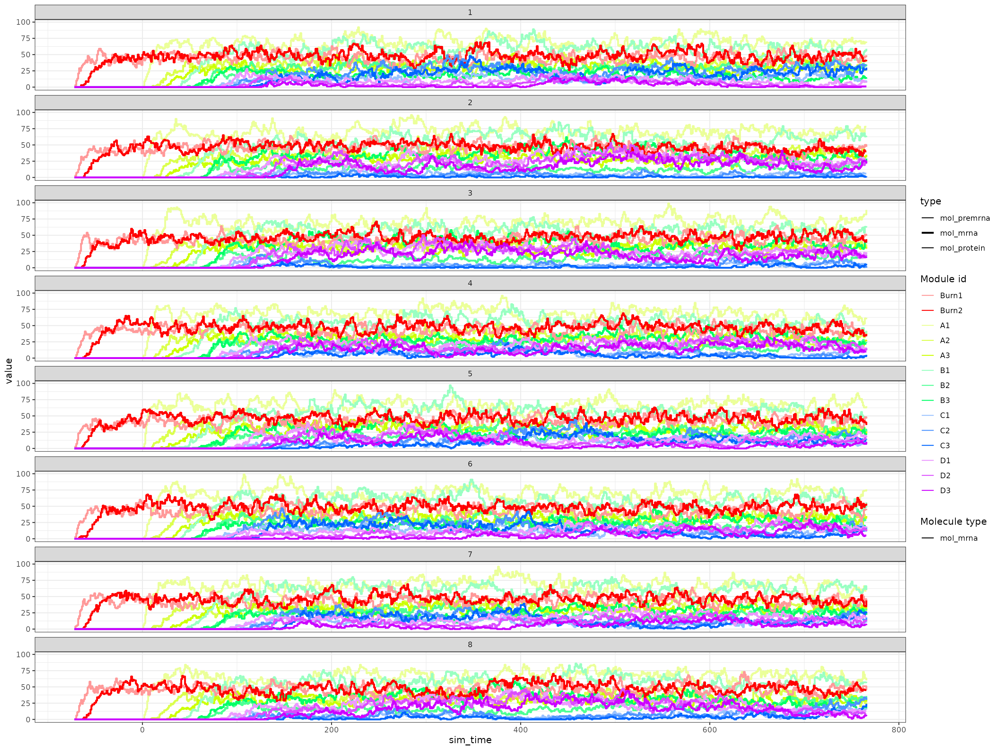

vignettes/advanced_topics/constructing_backbone.Rmd
constructing_backbone.RmdYou may want to construct your own custom backbone as opposed to those predefined in dyngen in order to obtain a desired effect. You can do so in one of two ways.
You can use the bblego functions in order to create custom backbones using so-called ‘backbone lego blocks’. Please note that bblego only allows you to create tree-shaped backbones (so no cycles), but in 90% of cases will be exactly what you need and in the remaining 10% of cases these functions will still get you 80% of where you need to be.
Here is an example of a bifurcating trajectory.
library(dyngen)
library(tidyverse)
set.seed(1)
backbone <- bblego(
bblego_start("A", type = "simple", num_modules = 2),
bblego_linear("A", "B", type = "simple", num_modules = 4),
bblego_branching("B", c("C", "D"), type = "simple"),
bblego_end("C", type = "doublerep2", num_modules = 4),
bblego_end("D", type = "doublerep1", num_modules = 7)
)
config <-
initialise_model(
backbone = backbone,
num_tfs = nrow(backbone$module_info),
num_targets = 500,
num_hks = 500,
verbose = FALSE
)
# the simulation is being sped up because rendering all vignettes with one core
# for pkgdown can otherwise take a very long time
config <-
initialise_model(
backbone = backbone,
num_tfs = nrow(backbone$module_info),
num_targets = 50,
num_hks = 50,
verbose = interactive(),
simulation_params = simulation_default(
ssa_algorithm = ssa_etl(tau = .01),
census_interval = 1,
experiment_params = simulation_type_wild_type(num_simulations = 10)
),
download_cache_dir = tools::R_user_dir("dyngen", "data")
)
out <- generate_dataset(config, make_plots = TRUE)## Warning: x or y has vectors with zero standard deviation; consider setting
## use_nan = TRUE
## Warning: x or y has vectors with zero standard deviation; consider setting
## use_nan = TRUE
## Warning: x or y has vectors with zero standard deviation; consider setting
## use_nan = TRUE
print(out$plot)
Check the following predefined backbones for some examples.
To get the most control over how a dyngen simulation is performed, you can construct a backbone manually (see ?backbone for the full spec). This is the only way to create some of the more specific backbone shapes such as disconnected, cyclic and converging.
This is an example of what data structures a backbone consists of.
A tibble containing meta information on the modules themselves. A module is a group of genes which, to some extent, shows the same expression behaviour. Several modules are connected together such that one or more genes from one module will regulate the expression of another module. By creating chains of modules, a dynamic behaviour in gene regulation can be created.
module_info <- tribble(
~module_id, ~basal, ~burn, ~independence,
"A1", 1, TRUE, 1,
"A2", 0, TRUE, 1,
"A3", 1, TRUE, 1,
"B1", 0, FALSE, 1,
"B2", 1, TRUE, 1,
"C1", 0, FALSE, 1,
"C2", 0, FALSE, 1,
"C3", 0, FALSE, 1,
"D1", 0, FALSE, 1,
"D2", 0, FALSE, 1,
"D3", 1, TRUE, 1,
"D4", 0, FALSE, 1,
"D5", 0, FALSE, 1
)A tibble describing which modules regulate which other modules.
module_network <- tribble(
~from, ~to, ~effect, ~strength, ~hill,
"A1", "A2", 1L, 10, 2,
"A2", "A3", -1L, 10, 2,
"A2", "B1", 1L, 1, 2,
"B1", "B2", -1L, 10, 2,
"B1", "C1", 1L, 1, 2,
"B1", "D1", 1L, 1, 2,
"C1", "C1", 1L, 10, 2,
"C1", "D1", -1L, 100, 2,
"C1", "C2", 1L, 1, 2,
"C2", "C3", 1L, 1, 2,
"C2", "A2", -1L, 10, 2,
"C2", "B1", -1L, 10, 2,
"C3", "A1", -1L, 10, 2,
"C3", "C1", -1L, 10, 2,
"C3", "D1", -1L, 10, 2,
"D1", "D1", 1L, 10, 2,
"D1", "C1", -1L, 100, 2,
"D1", "D2", 1L, 1, 2,
"D1", "D3", -1L, 10, 2,
"D2", "D4", 1L, 1, 2,
"D4", "D5", 1L, 1, 2,
"D3", "D5", -1L, 10, 2
)A tibble describing the expected expression pattern changes when a cell is simulated by dyngen. Each row represents one transition between two cell states.
expression_patterns <- tribble(
~from, ~to, ~module_progression, ~start, ~burn, ~time,
"sBurn", "sA", "+A1,+A2,+A3,+B2,+D3", TRUE, TRUE, 60,
"sA", "sB", "+B1", FALSE, FALSE, 60,
"sB", "sC", "+C1,+C2|-A2,-B1,+C3|-C1,-D1,-D2", FALSE, FALSE, 80,
"sB", "sD", "+D1,+D2,+D4,+D5", FALSE, FALSE, 120,
"sC", "sA", "+A1,+A2", FALSE, FALSE, 60
)By wrapping these data structures as a backbone object, we can now visualise the topology of the backbone. Drawing the backbone module network by hand on a piece of paper can help you understand how the gene regulatory network works.
backbone <- backbone(
module_info = module_info,
module_network = module_network,
expression_patterns = expression_patterns
)
config <- initialise_model(
backbone = backbone,
num_tfs = nrow(backbone$module_info),
num_targets = 500,
num_hks = 500,
simulation_params = simulation_default(
experiment_params = simulation_type_wild_type(num_simulations = 100),
total_time = 600
),
verbose = FALSE
)
plot_backbone_modulenet(config)
plot_backbone_statenet(config)
# the simulation is being sped up because rendering all vignettes with one core
# for pkgdown can otherwise take a very long time
config <-
initialise_model(
backbone = backbone,
num_tfs = nrow(backbone$module_info),
num_targets = 50,
num_hks = 50,
verbose = interactive(),
simulation_params = simulation_default(
ssa_algorithm = ssa_etl(tau = .01),
census_interval = 2,
experiment_params = simulation_type_wild_type(num_simulations = 20),
total_time = 600
),
download_cache_dir = tools::R_user_dir("dyngen", "data")
)This allows you to simulate the following dataset.
out <- generate_dataset(config, make_plots = TRUE)## Warning: x or y has vectors with zero standard deviation; consider setting
## use_nan = TRUE
## Warning: x or y has vectors with zero standard deviation; consider setting
## use_nan = TRUE
## Warning: x or y has vectors with zero standard deviation; consider setting
## use_nan = TRUE## Warning in params$fun(network = network, sim_meta = sim_meta, params = model$experiment_params, : One of the branches did not obtain enough simulation steps.
## Increase the number of simulations (see `?simulation_default`) or decreasing the census interval (see `?simulation_default`).
print(out$plot)
You can also use parts of the ‘bblego’ framework to construct a backbone manually. That’s because the bblego functions simply generate the three data frames (module_info, module_network and expression_patterns) required to construct a backbone manually. For example:
part0 <- bblego_start("A", type = "simple", num_modules = 2)
part1 <- bblego_linear("A", "B", type = "simple", num_modules = 3)
part3 <- bblego_end("C", type = "simple", num_modules = 3)
part4 <- bblego_end("D", type = "simple", num_modules = 3)
part1## $module_info
## # A tibble: 3 × 4
## module_id basal burn independence
## <chr> <dbl> <lgl> <dbl>
## 1 A1 0 FALSE 1
## 2 A2 0 FALSE 1
## 3 A3 0 FALSE 1
##
## $module_network
## # A tibble: 3 × 5
## from to effect strength hill
## <chr> <chr> <int> <dbl> <dbl>
## 1 A1 A2 1 1 2
## 2 A2 A3 1 1 2
## 3 A3 B1 1 1 2
##
## $expression_patterns
## # A tibble: 1 × 6
## from to module_progression start burn time
## <chr> <chr> <chr> <lgl> <lgl> <dbl>
## 1 sA sB +A1,+A2,+A3 FALSE FALSE 90You can combine these components with a custom bifurcation component which can switch back and forth between end states.
part2 <- list(
module_info = tribble(
~module_id, ~basal, ~burn, ~independence,
"B1", 0, FALSE, 1,
"B2", 0, FALSE, 1,
"B3", 0, FALSE, 1
),
module_network = tribble(
~from, ~to, ~effect, ~strength, ~hill,
"B1", "B2", 1L, 1, 2,
"B1", "B3", 1L, 1, 2,
"B2", "B3", -1L, 3, 2,
"B3", "B2", -1L, 3, 2,
"B2", "C1", 1L, 1, 2,
"B3", "D1", 1L, 1, 2
),
expression_patterns = tribble(
~from, ~to, ~module_progression, ~start, ~burn, ~time,
"sB", "sBmid", "+B1", FALSE, FALSE, 40,
"sBmid", "sC", "+B2", FALSE, FALSE, 40,
"sBmid", "sD", "+B3", FALSE, FALSE, 30
)
)
backbone <- bblego(
part0,
part1,
part2,
part3,
part4
)
config <- initialise_model(
backbone = backbone,
num_tfs = nrow(backbone$module_info),
num_targets = 500,
num_hks = 500,
simulation_params = simulation_default(
total_time = simtime_from_backbone(backbone) * 2
),
verbose = FALSE
)
plot_backbone_modulenet(config)
plot_backbone_statenet(config)
# the simulation is being sped up because rendering all vignettes with one core
# for pkgdown can otherwise take a very long time
config <-
initialise_model(
backbone = backbone,
num_tfs = nrow(backbone$module_info),
num_targets = 50,
num_hks = 50,
verbose = interactive(),
simulation_params = simulation_default(
ssa_algorithm = ssa_etl(tau = .01),
census_interval = 1,
experiment_params = simulation_type_wild_type(num_simulations = 10),
total_time = simtime_from_backbone(backbone) * 2
),
download_cache_dir = tools::R_user_dir("dyngen", "data")
)Looking at the gene expression over time shows that a simulation can indeed switch between C3 and D3 expression.
out <- generate_dataset(config, make_plots = TRUE)## Warning: x or y has vectors with zero standard deviation; consider setting
## use_nan = TRUE
## Warning: x or y has vectors with zero standard deviation; consider setting
## use_nan = TRUE
## Warning: x or y has vectors with zero standard deviation; consider setting
## use_nan = TRUE
print(out$plot)
plot_simulation_expression(out$model, simulation_i = 1:8, what = "mol_mrna")